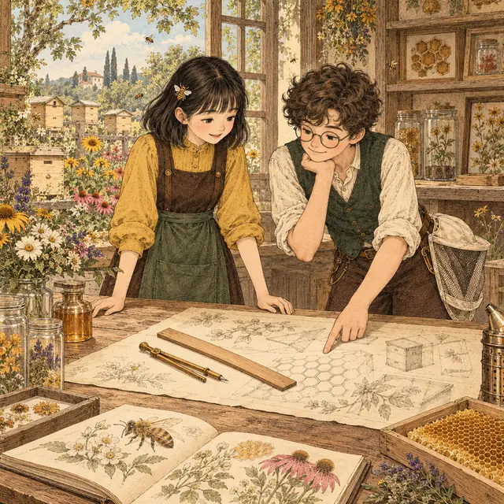
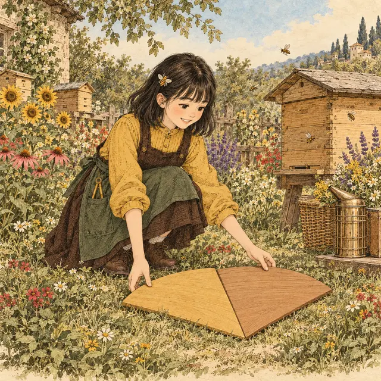
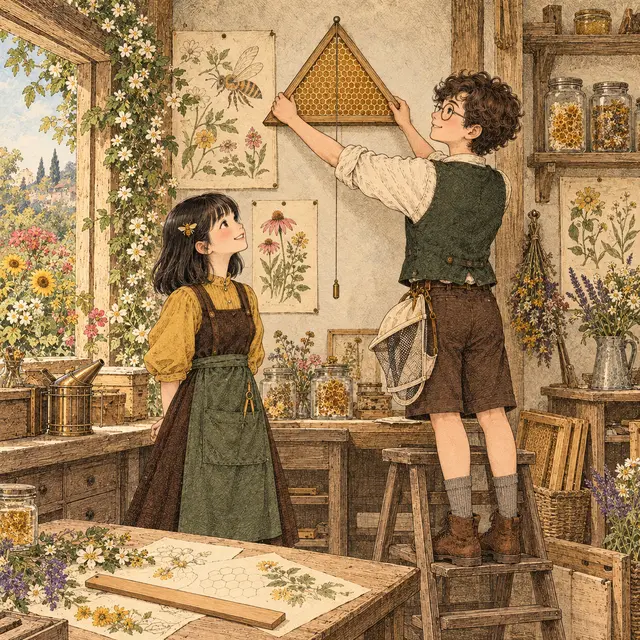

課前暖身漫畫：沒有刻度，怎麼比長短？
阿蜂在羊皮紙上畫了兩條蜜蜂航線，想知道哪一條比較長，可是工作室裡的直尺一個刻度都沒有。小蜜拿出圓規：先張開到第一條航線的兩端，再把針腳搬到第二條航線的起點畫一段弧——弧落在哪裡，答案就在哪裡。
重點 1：尺規作圖的規則——圓規是「搬長度」的工具
重點整理與敘述
- 尺規作圖：只用直尺和圓規作圖，並規定圓規只拿來畫圓或弧、直尺只拿來畫直線，不使用直尺上的刻度。
- 保留作圖痕跡：畫過的弧與線不要擦掉，別人才看得出你是怎麼作出來的。
- 圓規能搬長度：把圓規的兩腳張開到 \(A\)、\(B\) 兩點，兩腳之間的距離就是 \(\overline{AB}\) 的長；張開的大小不變、移到別處畫弧，弧上每一點到圓心的距離都等於 \(\overline{AB}\)。
- 用圓規比長短：以 \(C\) 為圓心、\(\overline{AB}\) 長為半徑畫弧，看弧落在 \(\overline{CD}\) 的哪裡——
- 落在 \(C\)、\(D\) 之間：\(\overline{AB} \lt \overline{CD}\)
- 剛好通過 \(D\)：\(\overline{AB} = \overline{CD}\)
- 落在 \(D\) 的外側：\(\overline{AB} \gt \overline{CD}\)

視覺互動探索：圓規比長短
\(\overline{AB}\) 固定，拉動滑桿改變 \(\overline{CD}\) 的長。按「下一步」看圓規怎麼先量 \(\overline{AB}\)、再搬到 \(C\) 畫弧；最後看弧落在 \(\overline{CD}\) 的哪裡，判斷誰比較長。
形成性評量 (尺規作圖的規則)
Q1. 下列關於尺規作圖的敘述，哪一個正確？
解析：答案為 B。圓規張開的大小不變時，移到哪裡畫弧，半徑都是原來那段長，所以能「搬長度」。
A 錯：尺規作圖不使用直尺上的刻度。
C 錯：直尺就是拿來畫直線的，線段只是直線的一部分。
D 錯：作圖痕跡要保留，別人才看得出作法。
Q2. 阿蜂把圓規張開成 \(\overline{MN}\) 的長，針腳固定在 \(O\) 點，畫了一整個圓。圓上任取一點 \(P\)，下列何者一定成立？
解析：答案為 A。圓的半徑就是圓規張開的長 \(\overline{MN}\)，圓上每一點到圓心 \(O\) 的距離都等於半徑。
B 錯：\(M\) 不一定在這個圓上，\(\overline{OM}\) 和半徑沒有關係。
C 錯：圓上的點到 \(M\)、\(N\) 的距離沒有規定要相等。
D 錯：半徑是 \(\overline{MN}\) 的整段長，不是一半。
重點 2：等線段作圖——把一條線段複製到直線上
重點整理與敘述
- 等線段作圖：利用尺規複製線段的長度。
- 作法（已知 \(\overline{AB}\)，作 \(\overline{CD} = \overline{AB}\)）：
- 畫一直線 \(L\)，在 \(L\) 上取一點 \(C\)。
- 以 \(C\) 為圓心、\(\overline{AB}\) 長為半徑畫弧，交 \(L\) 於 \(D\) 點。
- \(\overline{CD}\) 即為所求。
- 半徑從哪裡來：圓規先在 \(\overline{AB}\) 上張開（針腳 \(A\)、筆尖 \(B\)），再整支搬到 \(C\)，中途不能改變張開的大小。
- 也能在已知線段上找點：已知 \(\overline{MN}\) 與一點 \(P\)，以 \(M\) 為圓心、\(\overline{MP}\) 長為半徑畫弧交 \(\overline{MN}\) 於 \(Q\)，就得到 \(\overline{MQ} = \overline{MP}\)。
視覺互動探索：線段複印機
調整已知線段 \(\overline{AB}\) 的長與傾斜，按「下一步」一步一步看：先畫直線 \(L\)、取點 \(C\)，圓規量 \(\overline{AB}\)，再搬到 \(C\) 畫弧得到 \(D\)。最後量一量 \(\overline{CD}\) 是不是和 \(\overline{AB}\) 一樣長。
形成性評量 (等線段作圖)
Q3. 已知 \(\overline{AB}\)，小蜜在直線 \(L\) 上取一點 \(C\)，要作 \(\overline{CD} = \overline{AB}\)。以 \(C\) 為圓心畫弧時，圓規的半徑應該是？
解析：答案為 C。弧上每一點到 \(C\) 的距離都等於半徑，要讓 \(\overline{CD} = \overline{AB}\)，半徑就必須是 \(\overline{AB}\) 的長。
A 錯：任意長畫出來的 \(\overline{CD}\) 不一定等於 \(\overline{AB}\)。
B 錯：\(\overline{AC}\) 是兩個不相干的點連起來的長，跟 \(\overline{AB}\) 無關。
D 錯：用一半當半徑，得到的是 \(\overline{CD} = \frac{1}{2}\overline{AB}\)。
Q4. 承上題，以 \(C\) 為圓心、\(\overline{AB}\) 長為半徑畫一個完整的圓，這個圓和直線 \(L\) 交於幾點？哪一點可以當作 \(D\)？
解析：答案為 D。\(C\) 在直線 \(L\) 上，圓心在線上的圓會在 \(C\) 的左右兩側各交 \(L\) 一次，這兩點到 \(C\) 的距離都是 \(\overline{AB}\)，取哪一點都滿足 \(\overline{CD} = \overline{AB}\)。課本只畫一側的弧，是因為只需要一個 \(D\)。
A、B 錯：交點有兩個，不是只有一個。
C 錯：尺規作圖不使用刻度，而且一定交得到。
重點 3：線段的和與差——第二個弧往外接，還是往回切
重點整理與敘述
- 作 \(\overline{AB} = a + b\)：
- 畫一直線 \(L\)，在 \(L\) 上取一點 \(A\)。
- 以 \(A\) 為圓心、\(a\) 為半徑畫弧，在 \(A\) 點右側交 \(L\) 於 \(P\)。
- 以 \(P\) 為圓心、\(b\) 為半徑畫弧，在 \(P\) 點右側交 \(L\) 於 \(B\)。
- 作 \(\overline{MN} = a - b\)（\(a \gt b\)）：先作 \(\overline{MQ} = a\)，再以 \(Q\) 為圓心、\(b\) 為半徑畫弧，在 \(Q\) 點左側交 \(\overline{MQ}\) 於 \(N\)，\(\overline{MN}\) 即為所求。
- 關鍵是第二個弧畫在哪一側：繼續往外接，長度相加；往回切進第一段，長度相減。
- 連續接很多段也一樣：作 \(\overline{AB} = 3a\)，就以 \(a\) 為半徑往同一個方向連畫三次弧。
| 要作 | 第二個弧 |
|---|---|
| \(a + b\) | 在第一段的外側，接下去 |
| \(a - b\) | 往回落在第一段上 |
視覺互動探索：線段接接看
選「和」或「差」，拉動 \(a\)、\(b\) 的長。按「下一步」看第二個弧畫在 \(P\) 的哪一側：往右接下去得到 \(a + b\)，往回切進 \(\overline{AP}\) 得到 \(a - b\)。試試看 \(a\) 不比 \(b\) 長的時候，差還作得出來嗎？
形成性評量 (線段的和與差)
Q5. 已知兩線段長 \(a = 7\) 公分、\(b = 4\) 公分。小蜜在直線 \(L\) 上取 \(A\) 點，依序：以 \(A\) 為圓心、\(a\) 為半徑畫弧，在 \(A\) 右側交 \(L\) 於 \(P\)；以 \(P\) 為圓心、\(a\) 為半徑畫弧，在 \(P\) 右側交 \(L\) 於 \(Q\)；以 \(Q\) 為圓心、\(b\) 為半徑畫弧，在 \(Q\) 左側交 \(L\) 於 \(B\)。則 \(\overline{AB}\) 長多少公分？
解析：答案為 B。前兩個弧都往右接，\(\overline{AQ} = 2a = 14\)；第三個弧往左回切 \(b\)：
\[ \begin{aligned} \overline{AB} &= 2a - b \\ &= 14 - 4 = 10 \text{（公分）} \end{aligned} \]
A 錯：\(18 = 2a + b\)，把最後一個弧也當成往右接。
C 錯：\(3 = a - b\)，漏掉了第二段 \(a\)。
D 錯：\(14\) 是 \(\overline{AQ}\)，忘了往回切的 \(b\)。
Q6. 已知兩線段長 \(a\)、\(b\)，且 \(a \gt b\)。阿蜂要作 \(\overline{MN} = a - b\)：先作 \(\overline{MQ} = a\)，再以 \(Q\) 為圓心、\(b\) 為半徑畫弧。\(N\) 應該取在哪裡？
解析：答案為 C。從 \(Q\) 往 \(M\) 的方向回切一段 \(b\)，剩下的 \(\overline{MN}\) 才是 \(a - b\)。因為 \(a \gt b\)，\(N\) 一定落在 \(\overline{MQ}\) 上。
A 錯：往右接下去得到的是 \(a + b\)。
B 錯：以 \(Q\) 為圓心、\(b\) 為半徑，弧碰不到 \(M\) 的左側（因為 \(b \lt a\)）。
D 錯：以 \(M\) 為圓心、\(b\) 為半徑，得到的 \(\overline{MN}\) 是 \(b\)，不是 \(a - b\)。
重點 4：兩弧的交點——已知三邊作三角形
重點整理與敘述
- 交點同時滿足兩個條件：以 \(B\) 為圓心、\(c\) 為半徑的弧，上面每一點到 \(B\) 的距離都是 \(c\)；以 \(C\) 為圓心、\(b\) 為半徑的弧，上面每一點到 \(C\) 的距離都是 \(b\)。兩弧的交點 \(A\) 就同時有 \(\overline{AB} = c\)、\(\overline{AC} = b\)。
- 已知三邊長 \(a\)、\(b\)、\(c\) 作三角形：
- 作 \(\overline{BC} = a\)。
- 以 \(B\) 為圓心、\(c\) 為半徑，在 \(\overline{BC}\) 上方畫弧。
- 以 \(C\) 為圓心、\(b\) 為半徑，在 \(\overline{BC}\) 上方畫弧，兩弧交於 \(A\)。
- 連接 \(\overline{AB}\)、\(\overline{AC}\)，\(\triangle ABC\) 即為所求。
- 正三角形：三個半徑都用同一段長 \(a\)，作出的三角形三邊都是 \(a\)。
- 兩弧不一定相交：兩個半徑合起來不比 \(\overline{BC}\) 長，或一個圓把另一個整個包住時，兩弧碰不到，就作不出三角形（3-5 節會整理三邊要滿足的條件）。
視覺互動探索：兩弧找頂點
選「正三角形」或「已知三邊」，調整 \(a\)（\(\overline{BC}\)）、\(b\)（\(\overline{AC}\)）、\(c\)（\(\overline{AB}\)）。按「下一步」看兩個弧從 \(B\)、\(C\) 兩端各畫一次，交點就是頂點 \(A\)。把 \(b\)、\(c\) 調短一點，看看兩弧還碰得到嗎？
形成性評量 (兩弧的交點)
Q7. 已知一線段長 \(a\)。阿蜂先作 \(\overline{BC} = a\)，再以等線段作圖作出長 \(2a\) 的線段，然後分別以 \(B\)、\(C\) 為圓心、\(2a\) 為半徑，在 \(\overline{BC}\) 上方畫弧，兩弧交於 \(A\)，連接 \(\overline{AB}\)、\(\overline{AC}\)。關於 \(\triangle ABC\)，下列何者正確？
解析：答案為 D。\(A\) 在以 \(B\) 為圓心、\(2a\) 為半徑的弧上，所以 \(\overline{AB} = 2a\)；同理 \(\overline{AC} = 2a\)，兩腰相等，而 \(\overline{BC} = a\)。
A 錯：底邊 \(a\) 和兩腰 \(2a\) 不一樣長。
B 錯：三邊是 \(a\)、\(2a\)、\(2a\)，\(a^2 + (2a)^2 \ne (2a)^2\)，不是直角三角形。
C 錯：兩個半徑合起來是 \(4a\)，比 \(\overline{BC} = a\) 長，兩弧一定相交。
Q8. \(\overline{BC} = 18\) 公分。以 \(B\) 為圓心、\(7\) 公分為半徑畫一個圓，再以 \(C\) 為圓心、\(9\) 公分為半徑畫一個圓，兩圓有幾個交點？
解析：答案為 A。兩個圓沿著 \(\overline{BC}\) 最多只伸出 \(7 + 9 = 16\) 公分，比 \(\overline{BC} = 18\) 公分短，兩圓中間還隔著 \(2\) 公分，碰不到。
B 錯：要剛好 \(7 + 9 = 18\) 才會只碰一點。
C 錯：兩個半徑合起來要比 \(18\) 長才有兩個交點。
D 錯：兩個圓最多只有 \(2\) 個交點。
重點 5：等角作圖——複製一個角
重點整理與敘述
- 等角作圖：利用尺規複製一個角。
- 作法（已知 \(\angle A\)）：
- 畫一直線 \(L\)，在 \(L\) 上取一點 \(S\)。
- 以 \(A\) 點為圓心、適當長為半徑畫弧，交 \(\angle A\) 的兩邊於 \(B\)、\(C\)；再以 \(S\) 點為圓心、\(\overline{AB}\) 長為半徑畫弧，交 \(L\) 於 \(T\)。
- 以 \(T\) 點為圓心、\(\overline{BC}\) 長為半徑畫弧，交上一步的弧於 \(R\)。
- 連接 \(\overline{SR}\)，\(\angle RST\) 即為所求。
- 為什麼角會一樣大：\(\overline{SR} = \overline{ST} = \overline{AB} = \overline{AC}\)，而且 \(\overline{TR} = \overline{BC}\)。兩個角的「兩邊一樣長、兩端點的距離也一樣長」，張開的大小就一樣（3-3 節會用全等說明）。
視覺互動探索：角的複印機
調整 \(\angle A\) 的大小與「適當長」半徑，按「下一步」看三次圓規：先在 \(\angle A\) 上畫弧、再用同一個半徑在 \(S\) 畫弧、最後量 \(\overline{BC}\) 從 \(T\) 畫弧找到 \(R\)。最後一步量一量 \(\angle RST\)。換一個「適當長」，角會變嗎？
形成性評量 (等角作圖)
Q9. 小蜜照課本的步驟作等角作圖。如果她把第一個弧的「適當長」加長，之後以 \(S\) 為圓心的弧也改用這個新長度，其餘步驟照做，作出來的 \(\angle RST\) 會怎樣？
解析：答案為 D。半徑加長時，\(B\)、\(C\) 兩點沿著 \(\angle A\) 的兩邊往外移，\(\overline{BC}\) 也跟著變長；在 \(S\) 那邊用的是同樣的新半徑和新的 \(\overline{BC}\)，兩邊仍然「一模一樣」，所以 \(\angle RST\) 還是等於 \(\angle A\)。「適當長」只要讓弧交得到兩邊即可，取多長都可以。
A、B 錯：角的大小看的是開口，不是邊畫多長。
C 錯：兩弧仍然會相交。
Q10. 阿蜂作等角作圖時，第一次以 \(A\) 為圓心、\(3\) 公分為半徑畫弧交 \(\angle A\) 兩邊於 \(B\)、\(C\)；第二次以 \(S\) 為圓心時，卻用了 \(4\) 公分為半徑。其餘步驟照做（以 \(T\) 為圓心、\(\overline{BC}\) 長為半徑），作出的 \(\angle RST\) 和 \(\angle A\) 相比如何？
解析：答案為 C。在 \(S\) 那邊，兩邊變長成 \(4\) 公分，兩端點的距離卻還是原來的 \(\overline{BC}\)。兩根木條變長、末端距離不變，開口就變窄，所以角變小。
A 錯：兩個半徑必須相同，角才會相等。
B 錯：邊變長而末端距離不變，角只會變小。
D 錯：角的大小和邊長不成正比，不會剛好變成 \(\frac{3}{4}\) 倍。例如 \(\angle A = 60^\circ\) 時，\(\overline{BC} = 3\) 公分，在 \(S\) 那邊是兩邊 \(4\)、對邊 \(3\) 的等腰三角形，頂角約 \(44^\circ\)，不是 \(45^\circ\)。
重點 6：角的和與差——第二個角作在哪一側
重點整理與敘述
- 作 \(\angle 1 + \angle 2\)：
- 畫一直線，在直線上取一點 \(O\)。
- 用等角作圖作 \(\angle POQ = \angle 1\)。
- 以 \(O\) 為頂點、\(\overrightarrow{OQ}\) 為一邊，再作 \(\angle QOR = \angle 2\)，且 \(P\)、\(R\) 在 \(\overrightarrow{OQ}\) 的兩側，\(\angle POR\) 即為所求。
- 作 \(\angle 1 - \angle 2\)（\(\angle 1 \gt \angle 2\)）：第 3 步改成 \(P\)、\(R\) 在 \(\overrightarrow{OQ}\) 的同側，第二個角就「切進」第一個角裡。
- 跟線段的和差同一個道理：往外接是加，往回切是減。
- 好幾個角也是一次一次接下去，例如 \(\angle 1 + \angle 2 - \angle 3\) 就是先加、再往回減。

視覺互動探索：角的拼接台
選「和」或「差」，拉動 \(\angle 1\)、\(\angle 2\)。按「下一步」看兩次等角作圖：先把 \(\angle 1\) 搬到 \(O\)，再以 \(\overrightarrow{OQ}\) 為一邊把 \(\angle 2\) 作在另一側（和）或同一側（差）。
形成性評量 (角的和與差)
Q11. 已知 \(\angle 1 = 112^\circ\)、\(\angle 2 = 47^\circ\)。先作 \(\angle POQ = \angle 1\)，再以 \(\overrightarrow{OQ}\) 為一邊作 \(\angle QOR = \angle 2\)，且 \(P\)、\(R\) 在 \(\overrightarrow{OQ}\) 的同側，則 \(\angle POR\) 是幾度？
解析：答案為 B。\(P\)、\(R\) 在同側，\(\angle 2\) 切進 \(\angle 1\) 裡面：\(\angle POR = 112^\circ - 47^\circ = 65^\circ\)。
A 錯：\(159^\circ = 112^\circ + 47^\circ\)，那是 \(P\)、\(R\) 在兩側的情形。
C 錯：\(47^\circ\) 是 \(\angle QOR\)，不是 \(\angle POR\)。
D 錯：\(133^\circ = 180^\circ - 47^\circ\)，和這個作法無關。
Q12. 已知 \(\triangle ABC\)。小蜜先作 \(\angle POQ = \angle A\)，再以 \(\overrightarrow{OQ}\) 為一邊作 \(\angle QOR = \angle B\)，且 \(P\)、\(R\) 在 \(\overrightarrow{OQ}\) 的兩側。接著把 \(\overrightarrow{OP}\) 反向延長成 \(\overrightarrow{OS}\)（\(P\)、\(O\)、\(S\) 在同一直線上）。\(\angle ROS\) 等於下列哪一個角？
解析：答案為 C。\(\angle POR = \angle A + \angle B\)，而 \(\angle POS\) 是平角 \(180^\circ\)：
\[ \begin{aligned} \angle ROS &= 180^\circ - (\angle A + \angle B) \\ &= \angle C \end{aligned} \]
這用到 3-1 節的三角形內角和 \(180^\circ\)。
A、B、D 錯：\(\angle ROS\) 是平角扣掉 \(\angle A + \angle B\) 剩下的部分。
重點 7：中垂線作圖——畫出一個菱形
重點整理與敘述
- 中垂線：通過 \(\overline{AB}\) 的中點、而且與 \(\overline{AB}\) 垂直的直線（七年級用對摺找過）。
- 作法：
- 分別以 \(A\)、\(B\) 為圓心，大於 \(\frac{1}{2}\overline{AB}\) 的相同長度為半徑畫弧，兩弧相交於 \(P\)、\(Q\) 兩點。
- 連接 \(P\)、\(Q\)，直線 \(PQ\) 即為所求。
- 想法：\(\overline{PA} = \overline{PB} = \overline{QA} = \overline{QB}\)，四邊形 \(APBQ\) 是菱形。菱形是線對稱圖形，兩條對角線互相垂直平分，所以 \(PQ\) 垂直平分 \(\overline{AB}\)。
- 為什麼要大於一半：半徑小於 \(\frac{1}{2}\overline{AB}\) 時兩弧碰不到；剛好等於一半時兩弧只碰在中點一點，一個點畫不出一條直線。
- 中垂線是「線段」的：直線沒有兩個端點、沒有中點，所以沒有中垂線。
視覺互動探索：中垂線的菱形
調整 \(\overline{AB}\) 的長與半徑（\(\overline{AB}\) 的幾倍）。按「下一步」看兩個弧怎麼交出 \(P\)、\(Q\)。把半徑調到 \(0.50\) 倍以下看看會怎樣；再切到「兩端半徑不同」，看 \(PQ\) 還通不通過中點。
形成性評量 (中垂線作圖)
Q13. \(\overline{AB} = 10\) 公分。分別以 \(A\)、\(B\) 為圓心畫弧，下列哪一組半徑可以作出 \(\overline{AB}\) 的中垂線？
解析：答案為 D。半徑要「相同」而且「大於 \(\frac{1}{2}\overline{AB} = 5\) 公分」，\(9\) 公分兩個條件都符合（半徑比 \(\overline{AB}\) 還長也可以）。
A 錯：半徑剛好等於 \(5\)，兩弧只碰在中點一點，畫不出直線。
B 錯：\(4 \lt 5\)，兩弧碰不到。
C 錯：兩弧會相交，但兩個半徑不同，交點連成的直線雖然和 \(\overline{AB}\) 垂直，卻不通過中點。
Q14. 阿蜂作 \(\overline{AB}\) 的中垂線時，分別以 \(A\)、\(B\) 為圓心、都以 \(5\) 公分為半徑畫弧，兩弧交於 \(P\)、\(Q\)。四邊形 \(APBQ\) 的周長是多少公分？
解析：答案為 A。\(P\)、\(Q\) 都在兩個弧上，所以 \(\overline{PA}\)、\(\overline{PB}\)、\(\overline{QA}\)、\(\overline{QB}\) 都是半徑 \(5\) 公分，周長 \(4 \times 5 = 20\) 公分。
B 錯：只算了兩邊。C 錯：只算了三邊。
D 錯：周長只跟四條邊有關，四條邊都是半徑，不需要知道 \(\overline{AB}\)（\(\overline{AB}\) 是對角線）。
重點 8：用中垂線找中點——對半、再對半
重點整理與敘述
- 中點：\(\overline{AB}\) 的中垂線與 \(\overline{AB}\) 的交點 \(M\) 就是中點，\(\overline{AM} = \overline{MB} = \frac{1}{2}\overline{AB}\)。
- 對半再對半：再作 \(\overline{AM}\)（或 \(\overline{MB}\)）的中垂線，就得到 \(\frac{1}{4}\) 的位置；再作一次，得到 \(\frac{1}{8}\) 的位置……
- 例：在 \(\overline{AB}\) 上找 \(P\)，使 \(\overline{AP} : \overline{PB} = 1 : 3\)。\(P\) 在 \(\frac{1}{4}\) 的位置：先作 \(\overline{AB}\) 的中點 \(M\)，再作 \(\overline{AM}\) 的中點，就是 \(P\)。
- 只能對半分：每作一次中垂線，就把一段分成兩半，所以作得出的分點都在 \(\frac{1}{2}\)、\(\frac{1}{4}\)、\(\frac{3}{4}\)、\(\frac{1}{8}\)……這些分母是 \(2\)、\(4\)、\(8\)、\(16\)……的位置。
- 算長度：每作一次，新的一小段就是上一段的一半；分點的位置可以一段一段加減出來。
視覺互動探索：分點搜尋器
把 \(\overline{AB}\) 看成 \(8\) 等分，拉動滑桿選目標位置。按「下一步」看每作一次中垂線，就把「包住目標」的那一段對半分，直到剛好落在目標上。看看哪些位置一次就到、哪些要作三次？
形成性評量 (中點與等分點)
Q15. \(\overline{AB} = 80\) 公分。依序作圖：作 \(\overline{AB}\) 的中垂線交 \(\overline{AB}\) 於 \(M\)；作 \(\overline{MB}\) 的中垂線交 \(\overline{MB}\) 於 \(N\)；作 \(\overline{MN}\) 的中垂線交 \(\overline{MN}\) 於 \(P\)；作 \(\overline{PN}\) 的中垂線交 \(\overline{PN}\) 於 \(R\)。則 \(\overline{AR}\) 長多少公分？
解析：答案為 A。從 \(A\) 量起，一步一步找中點：
\[ \begin{aligned} \overline{AM} &= 40,\quad \overline{AN} = 60 \\ \overline{AP} &= \frac{40 + 60}{2} = 50 \\ \overline{AR} &= \frac{50 + 60}{2} = 55 \end{aligned} \]
B 錯：\(50\) 是 \(\overline{AP}\)，少作了最後一次。
C 錯：\(60\) 是 \(\overline{AN}\)。
D 錯：\(25 = \overline{RB}\)，量錯了端點。
Q16. 小蜜要在 \(\overline{CD}\) 上找一點 \(E\)，使 \(\overline{CE} : \overline{ED} = 1 : 15\)。只用中垂線作圖，最少要作幾次中垂線？
解析：答案為 C。\(\overline{CE} = \frac{1}{16}\overline{CD}\)，而 \(16 = 2 \times 2 \times 2 \times 2\)：每次都取靠近 \(C\) 的那一半，對半分 \(4\) 次得到 \(\frac{1}{2}, \frac{1}{4}, \frac{1}{8}, \frac{1}{16}\)。
A 錯：\(2\) 次只到 \(\frac{1}{4}\)。B 錯：\(3\) 次只到 \(\frac{1}{8}\)。
D 錯：不需要一份一份切，每次對半，份數就加倍。
重點 9：角平分線作圖——畫出一個箏形
重點整理與敘述
- 角平分線：把 \(\angle AOB\) 平分成兩個相等的角的射線 \(\overrightarrow{OC}\)，\(\angle AOC = \angle BOC = \frac{1}{2}\angle AOB\)（七年級用對摺找過）。
- 作法（已知 \(\angle P\)）：
- 以 \(P\) 點為圓心、適當長為半徑畫弧，交 \(\angle P\) 的兩邊於 \(A\)、\(B\)。
- 分別以 \(A\)、\(B\) 為圓心、大於 \(\frac{1}{2}\overline{AB}\) 的相同長度為半徑畫弧，兩弧相交於 \(Q\)。
- 連接 \(P\)、\(Q\)，\(\overrightarrow{PQ}\) 即為所求。
- 想法：\(\overline{PA} = \overline{PB}\)、\(\overline{QA} = \overline{QB}\)，四邊形 \(APBQ\) 是箏形。箏形是線對稱圖形，對角線 \(PQ\) 是它的對稱軸，所以 \(PQ\) 平分 \(\angle APB\)。
- 兩次半徑可以不同：第 1 步的「適當長」和第 2 步的「大於一半」是兩件事，不必相等；但第 2 步的兩個弧一定要用同一個半徑。
視覺互動探索：角平分線的箏形
調整 \(\angle P\)、第一個弧的「適當長」，以及第二步的半徑（\(\frac{1}{2}\overline{AB}\) 的幾倍）。按「下一步」看箏形 \(APBQ\) 怎麼出現；把第二步的倍數調到 \(1\) 以下，兩弧還交得到嗎？
形成性評量 (角平分線作圖)
Q17. 阿蜂作 \(\angle P\) 的角平分線：① 以 \(P\) 為圓心、適當長為半徑畫弧，交兩邊於 \(A\)、\(B\)；② 分別以 \(A\)、\(B\) 為圓心、大於 \(\frac{1}{2}\overline{AB}\) 的相同長度為半徑畫弧，交於 \(Q\)；③ 連接 \(\overrightarrow{PQ}\)。下列何者不一定成立？
解析：答案為 D。\(\overline{PA}\) 是第 ① 步的半徑，\(\overline{QA}\) 是第 ② 步的半徑，兩次半徑沒有規定要相同，所以不一定相等。
A 對：都是第 ① 步的半徑。
B 對：都是第 ② 步的半徑。
C 對：這正是角平分線作圖要作出的結果。
Q18. 承上題，如果第 ② 步剛好用 \(\overline{PA}\) 的長當半徑（\(\angle P\) 不是直角），那麼四邊形 \(APBQ\) 是什麼形狀？
解析：答案為 A。此時 \(\overline{PA} = \overline{PB} = \overline{QA} = \overline{QB}\)，四邊都相等，是菱形；菱形的對角線也平分頂角，所以 \(\overrightarrow{PQ}\) 仍然是角平分線。
B 錯：要四個角都是直角才是正方形，\(\angle P\) 不是直角。
C 錯：長方形的四邊不一定相等，而且四個角要是直角。
D 錯：四邊相等的四邊形不是梯形。
重點 10：角平分線的應用——再平分與角度計算
重點整理與敘述
- 一次平分得到一半：作 \(\angle AOB\) 的角平分線 \(\overrightarrow{OC}\)，\(\angle AOC = \frac{1}{2}\angle AOB\)。
- 再平分：再作 \(\angle AOC\) 的角平分線，得到 \(\frac{1}{4}\angle AOB\)；作 \(\angle COB\) 的角平分線，從 \(\overrightarrow{OA}\) 量起是 \(\frac{3}{4}\angle AOB\)。例：把 \(60^\circ\) 四等分，每一份是 \(15^\circ\)。
- 只能對半分：只用角平分線作圖，能作出的角都是原角的 \(\frac{1}{2}\)、\(\frac{1}{4}\)、\(\frac{3}{4}\)、\(\frac{1}{8}\)……（分母是 \(2\)、\(4\)、\(8\)……），作不出原角的 \(\frac{1}{3}\)。
- 兩條角平分線的夾角：\(\overrightarrow{OC}\) 在 \(\angle AOB\) 內部，\(\overrightarrow{OE}\)、\(\overrightarrow{OF}\) 分別平分 \(\angle AOC\)、\(\angle COB\) 時， \[ \begin{aligned} & \angle EOF \\ &= \frac{1}{2}\angle AOC + \frac{1}{2}\angle COB \\ &= \frac{1}{2}\angle AOB \end{aligned} \]
視覺互動探索：再平分的扇子
選 \(\angle AOB\) 的大小，再選目標「從 \(\overrightarrow{OA}\) 量起的第幾個八分之一」。按「下一步」看每一次角平分線作圖，都把包住目標的那一個角對半分，直到剛好作出目標射線。
形成性評量 (再平分與角度計算)
Q19. 已知 \(\angle A = 135^\circ\)。只用角平分線作圖（可以作很多次），下列哪一個角作不出來？
解析：答案為 C。\(45^\circ\) 是 \(135^\circ\) 的 \(\frac{1}{3}\)，對半分只能得到分母是 \(2\)、\(4\)、\(8\)……的份數，得不到 \(\frac{1}{3}\)。
A 可以：\(67.5^\circ = \frac{1}{2} \times 135^\circ\)。
B 可以：\(101.25^\circ = \frac{3}{4} \times 135^\circ\)，先平分，再平分靠外側的那一半。
D 可以：\(33.75^\circ = \frac{1}{4} \times 135^\circ\)。
Q20. \(\overrightarrow{OC}\) 在 \(\angle AOB\) 的內部，\(\angle AOB = 156^\circ\)。小蜜分別作 \(\angle AOC\)、\(\angle BOC\) 的角平分線 \(\overrightarrow{OE}\)、\(\overrightarrow{OF}\)，則 \(\angle EOF\) 是幾度？
解析：答案為 A。\(\angle EOC = \frac{1}{2}\angle AOC\)、\(\angle COF = \frac{1}{2}\angle COB\)，兩者相加：
\[ \begin{aligned} \angle EOF &= \frac{1}{2}(\angle AOC + \angle COB) \\ &= \frac{1}{2} \times 156^\circ = 78^\circ \end{aligned} \]
B 錯：那是整個 \(\angle AOB\)。C 錯：\(39^\circ\) 是 \(\frac{1}{4}\angle AOB\)，多除了一次 \(2\)。
D 錯：\(\overrightarrow{OC}\) 在哪裡都不影響，兩半各取一半，合起來永遠是全部的一半。
重點 11：過線上一點作垂線——畫出一個等腰三角形
重點整理與敘述
- 作法（已知直線 \(L\) 與 \(L\) 上一點 \(P\)）：
- 以 \(P\) 點為圓心、適當長為半徑畫弧，交 \(L\) 於 \(A\)、\(B\) 兩點。
- 分別以 \(A\)、\(B\) 為圓心、大於 \(\frac{1}{2}\overline{AB}\) 的相同長度為半徑畫弧，兩弧交於 \(Q\)。
- 連接 \(P\)、\(Q\)，直線 \(PQ\) 即為所求。
- 想法：\(\overline{PA} = \overline{PB}\)，\(P\) 是 \(\overline{AB}\) 的中點；\(\overline{QA} = \overline{QB}\)，\(\triangle QAB\) 是等腰三角形。等腰三角形的對稱軸垂直平分底邊，所以 \(PQ \perp L\)。
- 另一種看法：\(\angle APB\) 是平角（\(180^\circ\)），\(PQ\) 就是它的角平分線，平分後兩邊各 \(90^\circ\)。
- 第 2 步的半徑：若剛好用 \(\overline{PA}\)（也就是 \(\frac{1}{2}\overline{AB}\)）當半徑，兩弧只碰在 \(P\) 點，找不到另一個點 \(Q\)。
視覺互動探索：線上立柱
拉動 \(P\) 在直線 \(L\) 上的位置、第一個弧的「適當長」，以及第二步的半徑（\(\frac{1}{2}\overline{AB}\) 的幾倍）。按「下一步」看等腰三角形 \(QAB\) 怎麼出現；把倍數調到 \(1\)，看看兩弧碰在哪裡。
形成性評量 (過線上一點作垂線)
Q21. 阿蜂要過直線 \(L\) 上一點 \(P\) 作 \(L\) 的垂線，他的作法如下。哪一個步驟錯了？
步驟一：以 \(P\) 為圓心、適當長為半徑畫弧，交 \(L\) 於 \(A\)、\(B\)。
步驟二：以 \(A\) 為圓心、\(\overline{AB}\) 長為半徑畫弧，再以 \(B\) 為圓心、\(\overline{PB}\) 長為半徑畫弧，兩弧交於 \(Q\)。
步驟三：連接 \(P\)、\(Q\)。
解析：答案為 B。步驟二的兩個半徑不同（\(\overline{AB}\) 是 \(\overline{PB}\) 的 \(2\) 倍），\(\overline{QA} \ne \overline{QB}\)，\(\triangle QAB\) 不是等腰三角形，\(Q\) 不會在過 \(P\) 的垂線上。兩個弧必須用大於 \(\frac{1}{2}\overline{AB}\) 的相同長度。
A 錯：步驟一正確，\(\overline{PA} = \overline{PB}\)。
C 錯：問題出在 \(Q\) 點的位置，不在連線這一步。
Q22. \(A\)、\(B\)、\(C\) 三點在同一直線上，\(B\) 在 \(A\)、\(C\) 之間（\(\angle ABC = 180^\circ\)）。下列哪一種作法可以作出 \(\angle PBC = 135^\circ\)？
解析：答案為 B。\(\angle QBC = 90^\circ\)、\(\angle QBA = 90^\circ\)，\(\overrightarrow{BP}\) 平分 \(\angle QBA\)，所以
\[ \angle PBC = 90^\circ + 45^\circ = 135^\circ \]
A 錯：平分的是 \(\angle QBC\)，得到 \(\angle PBC = 45^\circ\)。
C 錯：平角的角平分線就是垂線，再平分 \(\angle QBC\) 一樣得到 \(45^\circ\)。
D 錯：中垂線通過 \(\overline{AC}\) 的中點，\(B\) 不一定是中點，而且這樣作不出 \(135^\circ\)。
重點 12：過線外一點作垂線——又是一個箏形
重點整理與敘述
- 作法（已知直線 \(L\) 與 \(L\) 外一點 \(P\)）：
- 以 \(P\) 點為圓心、適當長為半徑畫弧，交 \(L\) 於 \(A\)、\(B\) 兩點。
- 分別以 \(A\)、\(B\) 為圓心、大於 \(\frac{1}{2}\overline{AB}\) 的相同長度為半徑，在 \(L\) 的另一側畫弧，兩弧交於 \(Q\)。
- 連接 \(P\)、\(Q\)，直線 \(PQ\) 即為所求。
- 想法：\(\overline{PA} = \overline{PB}\)、\(\overline{QA} = \overline{QB}\)，四邊形 \(APBQ\) 是箏形，箏形的兩條對角線互相垂直，所以 \(PQ \perp L\)。
- 第 1 步的「適當長」：一定要比 \(P\) 到 \(L\) 的距離長，弧才碰得到 \(L\)、而且交出兩個點。
- 兩次半徑互不相干：第 1 步與第 2 步用的長度不一定相同，所以 \(P\)、\(Q\) 到 \(L\) 的距離通常不一樣。
視覺互動探索：線外的垂線
調整 \(P\) 到 \(L\) 的距離、第一個弧的「適當長」，以及第二步的半徑（\(\frac{1}{2}\overline{AB}\) 的幾倍）。按「下一步」看箏形 \(APBQ\)；最後量一量 \(\overline{PA}\) 和 \(\overline{QA}\)、\(\overline{PH}\) 和 \(\overline{QH}\) 是不是一樣長。
形成性評量 (過線外一點作垂線)
Q23. 小蜜過直線 \(L\) 外一點 \(P\) 作 \(L\) 的垂線：以 \(P\) 為圓心、\(13\) 公分為半徑畫弧，交 \(L\) 於 \(A\)、\(B\)，量得 \(\overline{AB} = 24\) 公分；再分別以 \(A\)、\(B\) 為圓心、同樣以 \(13\) 公分為半徑，在 \(L\) 的另一側畫弧，交於 \(Q\)。則 \(\overline{PQ}\) 長多少公分？
解析：答案為 A。設 \(PQ\) 交 \(L\) 於 \(H\)，\(H\) 是 \(\overline{AB}\) 的中點，\(\overline{AH} = 12\)。直角三角形 \(PHA\) 中：
\[ \overline{PH} = \sqrt{13^2 - 12^2} = 5 \]
兩次半徑都是 \(13\)，\(Q\) 在另一側同樣距離 \(5\)，所以 \(\overline{PQ} = 5 + 5 = 10\)。
B 錯：\(5\) 只是 \(\overline{PH}\)。
C 錯：\(13\) 是 \(\overline{PA}\)，不是 \(\overline{PQ}\)。
D 錯：\(24\) 是 \(\overline{AB}\)。
Q24. \(P\) 到直線 \(L\) 的距離是 \(7\) 公分。要過 \(P\) 作 \(L\) 的垂線，第一步以 \(P\) 為圓心畫弧，下列哪一個半徑才能讓弧交 \(L\) 於兩點？
解析：答案為 B。弧上每一點到 \(P\) 都是半徑那麼遠，半徑要比 \(P\) 到 \(L\) 的最短距離 \(7\) 公分長，弧才會越過 \(L\)、交出兩個點。
A、D 錯：半徑比 \(7\) 短，弧碰不到 \(L\)。
C 錯：半徑剛好 \(7\)，弧只碰到 \(L\) 上的一點（垂足），得不到兩個點。
重點 13：三角形的高——鈍角要先延長，痕跡要會判讀
重點整理與敘述
- 三角形的高：從一個頂點到對邊所在直線的垂直線段，所以是「過線外一點作垂線」。
- 鈍角三角形：鈍角兩旁那兩邊上的高，垂足會落在邊的延長線上。作圖時要先用直尺把那一邊延長，以頂點為圓心畫的弧才交得到兩個點。
- 四種作圖痕跡：
| 作的是 | 痕跡的特徵 |
|---|---|
| \(\overline{BC}\) 的中垂線 | 以 \(B\)、\(C\) 為圓心，同半徑畫弧交兩點；不一定通過頂點 \(A\) |
| \(\overline{BC}\) 上的中線 | 先用中垂線找 \(\overline{BC}\) 的中點 \(M\)，再連 \(\overline{AM}\) |
| \(\overline{BC}\) 上的高 | 以 \(A\) 為圓心畫弧交直線 \(BC\) 於兩點，再以這兩點為圓心畫弧 |
| \(\angle A\) 的角平分線 | 以 \(A\) 為圓心畫弧交角的兩邊，再以這兩點為圓心畫弧 |

視覺互動探索：三角形裡的四條線
拉動頂點 \(A\) 的位置（往左拉到 \(B\) 的左邊時，\(\angle B\) 會變成鈍角），再選要作哪一條線。按「下一步」看作圖痕跡；比比看四種痕跡哪裡不一樣，\(A\) 剛好在正中間時又會怎樣？
形成性評量 (三角形的高與作圖痕跡)
Q25. \(\triangle ABC\) 中，\(\angle B\) 是鈍角。阿蜂要用尺規作 \(\overline{AB}\) 邊上的高 \(\overline{CH}\)，第一步應該怎麼做？
解析：答案為 B。\(\angle B\) 是鈍角，從 \(C\) 往直線 \(AB\) 作垂線，垂足 \(H\) 會落在 \(\overline{AB}\) 往 \(B\) 那一端的延長線上；不先延長，以 \(C\) 為圓心的弧在 \(\overline{AB}\) 上交不出兩個點。
A 錯：弧可能只交到 \(\overline{AB}\) 一點，甚至一點也交不到。
C 錯：中垂線通過 \(\overline{AB}\) 的中點，不一定通過 \(C\)。
D 錯：角平分線一般不會和 \(\overline{AB}\) 垂直。
Q26. \(\triangle ABC\) 中，\(\overline{BC} \gt \overline{BA}\)。小蜜以 \(B\) 為圓心、\(\overline{BA}\) 長為半徑畫弧，交 \(\overline{BC}\) 於 \(D\)；再分別以 \(A\)、\(D\) 為圓心、大於 \(\frac{1}{2}\overline{AD}\) 的相同長度為半徑畫弧，兩弧交於 \(E\)（\(E\) 與 \(B\) 在直線 \(AD\) 的兩側）；連接 \(\overrightarrow{BE}\)。\(\overrightarrow{BE}\) 是下列哪一條線？
解析：答案為 D。\(A\) 在 \(\angle B\) 的一邊 \(\overline{BA}\) 上，\(D\) 在另一邊 \(\overline{BC}\) 上，而且 \(\overline{BA} = \overline{BD}\)：這正是角平分線作圖的第 1 步，只是「適當長」剛好取 \(\overline{BA}\)。再以 \(A\)、\(D\) 作同半徑的弧，得到箏形 \(BAED\)，\(\overrightarrow{BE}\) 平分 \(\angle B\)。
A、B、C 錯：三者都和 \(\overline{AC}\) 有關，但這些弧的圓心是 \(A\)、\(D\)，不是 \(A\)、\(C\)；而且 \(\overrightarrow{BE}\) 從頂點 \(B\) 出發，只有在 \(\overline{BA} = \overline{BC}\) 時才會同時是高與中線。
小節總結與核心回顧
尺規作圖速查表
- 規則：圓規只畫圓或弧，直尺只畫直線、不看刻度；保留作圖痕跡。
- 等線段：圓規量 \(\overline{AB}\)，搬到 \(C\) 畫弧。和是往外接，差是往回切。
- 兩弧交點：同時到兩個圓心各有指定距離；兩弧不一定相交。
- 等角：同一個「適當長」畫兩次弧，再量兩交點的距離。角的和差看第二個角作在哪一側。
- 中垂線：兩端同半徑（大於一半）→ 菱形 → 對角線互相垂直平分。
- 角平分線：頂點畫弧得兩點，兩點同半徑畫弧 → 箏形 → 對角線是對稱軸。
- 線上一點作垂線：等腰三角形 \(QAB\)，也是平角的角平分線。
- 線外一點作垂線：箏形 \(APBQ\)，第一個弧要比 \(P\) 到 \(L\) 的距離長。
- 三角形的高：線外一點作垂線；鈍角那兩邊要先延長。
- 對半分：中垂線、角平分線一再使用，只得到 \(\frac{1}{2}\)、\(\frac{1}{4}\)、\(\frac{1}{8}\)……的份數。
回到養蜂花園：蜂巢的六邊形
一個半徑，繞一圈
小蜜用圓規畫一個圓，圓規不動，在圓周上從任一點開始，以半徑的長連續截下去，剛好截 \(6\) 次就回到起點。把這 \(6\) 個點依序連起來，就是一個正六邊形——每一邊都等於半徑，因為每一塊都是重點 4 的正三角形。
沒有刻度也能分
阿蜂要把花壇的一邊分成 \(4\) 段種花，只要作兩次中垂線；要在蜂箱的轉角釘一根斜撐，就作一次角平分線。整張設計圖從頭到尾，沒有用到任何一個刻度。
下一節
等角作圖為什麼成立？3-3 節的三角形全等性質（SSS）會給出答案，到時候也會用尺規作出指定條件的三角形。